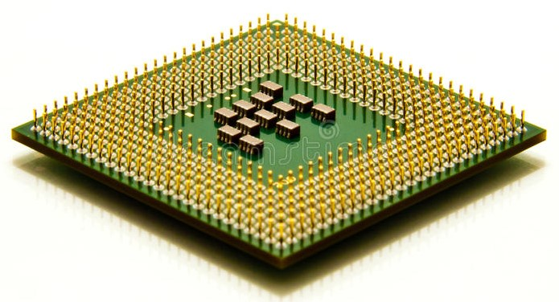
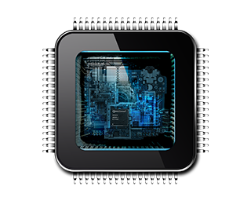
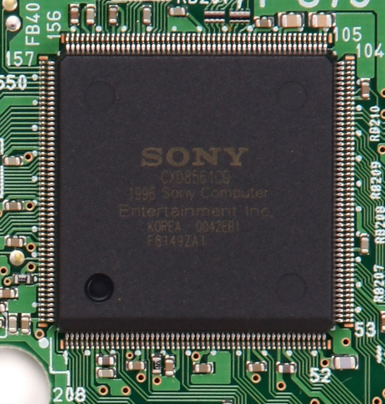

LE MICROPROCESSEUR :
  I) Qu'est-ce que c'est ?
Le microprocesseur est le cerveau de l'ordinateur. Il est appellé ainsi car les processeurs étaient avant bien plus imposants mais, au fil du temps, les constructeurs ont réussit à miniaturiser les composants pour les regrouper dans un seul boitier. C'est le composant chargé de calculer, d'exécuter les instructions, et de traiter les données des programmes. Le microprocesseur est mis dans un support, le socket, fixé à la carte mère. Il est souvent caché par un dispositif de refroidissement.
II) Comment ça marche ?
Le microprocesseur fonctionne en quatre temps, il reçoit une instruction, la décode, l'exécute, et renvoie le résultat. Les informations sont transmises grâce aux bus.
III) Quelles différences font la qualité ?
Il y a 4 principales caractéristiques qui jouent sur le choix (et sur le prix) d'un microprocesseur. La première est le jeu d'instruction, c'est-à-dire le nombre d'instructions (additionner, comparer, ...) qu'il peut exécuter, soit de plusieurs dizaines à plusieurs miliers d'instructions différentes. Une deuxième est la complexité de son architecture, qui détermine notamment la taille des nombres avec lesquels il peut travailler. La vitesse de l'horloge, qui rejoint la complexité de l'architecture et permet avec une fréquence élevée d'exécuter un plus grand nombre d'instructions. Le nombre de bits que le processeur peut traiter simultanément joue aussi. Ces caractéristiques font que le prix d'un microprocesseur s'étend de 50€ à 250€.
IV) Qui les fabrique ?
Les deux principaux fabricants de microprocesseurs sont AMD et INTEL.
| ❮ CARTE MÈRE | DISQUE DUR ❯ |